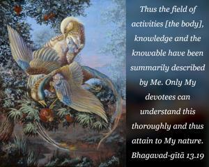
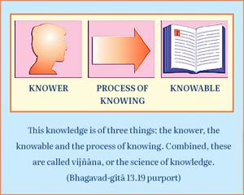

Thus the field of activities [the body], knowledge and the knowable have been summarily described by Me. Only My devotees can understand this thoroughly and thus attain to My nature.


The Lord has described in summary the body, knowledge and the knowable. This knowledge is of three things: the knower, the knowable and the process of knowing. Combined, these are called vijñāna, or the science of knowledge. Perfect knowledge can be understood by the unalloyed devotees of the Lord directly. Others are unable to understand. The monists say that at the ultimate stage these three items become one, but the devotees do not accept this. Knowledge and development of knowledge mean understanding oneself in Kṛṣṇa consciousness. We are being led by material consciousness, but as soon as we transfer all consciousness to Kṛṣṇa’s activities and realize that Kṛṣṇa is everything, then we attain real knowledge. In other words, knowledge is nothing but the preliminary stage of understanding devotional service perfectly. In the Fifteenth Chapter this will be very clearly explained.
Now, to summarize, one may understand that verses 6 and 7, beginning from mahā-bhūtāni and continuing through cetanā dhṛtiḥ, analyze the material elements and certain manifestations of the symptoms of life. These combine to form the body, or the field of activities. And verses 8 through 12, from amānitvam through tattva-jñānārtha-darśanam, describe the process of knowledge for understanding both types of knower of the field of activities, namely the soul and the Supersoul. Then verses 13 through 18, beginning from anādi mat-param and continuing through hṛdi sarvasya viṣṭhitam, describe the soul and the Supreme Lord, or the Supersoul.
Thus three items have been described: the field of activity (the body), the process of understanding, and both the soul and the Supersoul. It is especially described here that only the unalloyed devotees of the Lord can understand these three items clearly. So for these devotees Bhagavad-gītā is fully useful; it is they who can attain the supreme goal, the nature of the Supreme Lord, Kṛṣṇa. In other words, only devotees, and not others, can understand Bhagavad-gītā and derive the desired result.